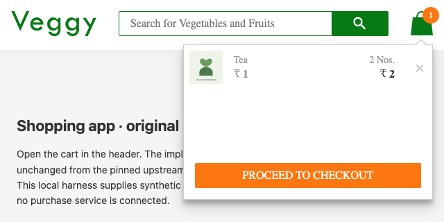

EXTERNAL-SOURCE INVESTIGATION · 2026-11-03T01:16:15.752Z
Checkout below the viewport.
In the pinned shopping-app header, a 388px cart popup stays anchored to a fixed header. At 640×320, the checkout button’s center remains at y=417 after scrolling attempts, below the viewport’s 320px edge.
Scope: unchanged source from sivadass/react-shopping-cart, revision 0e867f1 (2021), mounted in a local API fixture harness. This is not a finding against the current deployed site. Local fallback fonts and a modern compatibility runtime are used.
Playwright trial click also fails after trying to scroll.

Both the rule and Playwright trial click pass.

Independent check
The generic campaign confirmed the same failure in three fresh contexts, reduced the fixture and executed its exported test. Separately, Playwright’s trial click fails on the original and passes after the candidate CSS is injected. The candidate also passes the normal control, all 14 supplied cases and the reduced saved input: 16/16 checks. These results do not establish superiority over an ordinary Playwright assertion.
Download the failing regression · Saved input and recipe · Independent verification details
Reduced input
{
"products": [
{
"id": "cart-primary",
"name": "Tea",
"price": 1,
"quantity": 2,
"image": "/fixtures/compat-app/product.svg"
}
],
"viewportWidth": 640,
"viewportHeight": 320
}Candidate CSS, for review
The proposed change caps popup height to the available viewport and lets the item list scroll while the footer remains visible. It was injected only in verification pages; no vendored upstream file was changed.
/* Investigation-only candidate. This does not modify the vendored upstream SCSS. */
.cart-preview.active {
height: min(388px, calc(100dvh - 96px));
display: flex;
flex-direction: column;
}
.cart-preview.active .cart-items {
flex: 1 1 auto;
min-height: 0;
height: auto;
}
.cart-preview.active .action-block {
position: static;
flex: 0 0 auto;
}
Candidate verification
| Case | Viewport | Rule | Trial click |
|---|---|---|---|
| Baseline | 1000×900 | passed | passed |
| Landscape phone viewport | 640×320 | passed | passed |
| Tall mobile viewport | 390×844 | passed | passed |
| Narrow phone viewport | 320×600 | passed | passed |
| Short desktop window | 1000×280 | passed | passed |
| Long valid product name | 1000×900 | passed | passed |
| Five cart products | 1000×900 | passed | passed |
| Seeded viewport 1 | 640×280 | passed | passed |
| Seeded viewport 2 | 1000×900 | passed | passed |
| Seeded viewport 3 | 390×390 | passed | passed |
| Seeded viewport 4 | 640×600 | passed | passed |
| Seeded viewport 5 | 320×390 | passed | passed |
| Seeded viewport 6 | 390×390 | passed | passed |
| Seeded viewport 7 | 1000×900 | passed | passed |
| Seeded viewport 8 | 320×280 | passed | passed |
| Reduced saved case | 640×320 | passed | passed |
Chromium 156.0.8078.4. Original source fingerprint: 872c2a6e131c303c54c55bb611616a1c2fbfa0073f54f3e70d5d0c137d7c8957. Candidate CSS SHA256: 774c20e28b16599554f255a8766c16afa5509a40b89bd491e4fffd851f9b7aba.